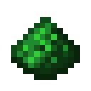
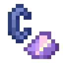
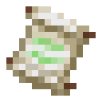
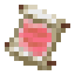
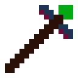

English version
说明仅针对1.5.0版本。模组仍在开发，不代表最终品质。
总览
飞路粉飞路粉！！！
物品
飞路粉

合成
| 火药 | 火药 | 火药 |
| 火药 | 绿宝石 | 火药 |
| 火药 | 火药 | 火药 |
使用
将飞路粉丢入火中，在其被烧毁后，会将 火焰[1] 转换[2]成 传送火焰[3]
[1] 竖直向上的火焰
[2] 转换机制
[3] 其目的地名称由飞路粉的命名决定创造玩家[1]手持并使用即可 传送[2]到 指定的[3]传送点
[1] 靠识别玩家是否具有“instabuild”来进行判断
[2] 传送机制
[3] 目的地名称由飞路粉的命名决定
传送火石

合成
无序合成：青金石 * 1 + 紫水晶碎片 * 1
使用
- 在传送核心顶部使用，可 点亮[1]并 激活[2]传送核心
[1] 使传送核心在其顶部持续生火
[2] 激活传送核心
传送卷轴

合成
无序合成：飞路粉 * 1 + 纸 * 2
使用
- 玩家手持并使用即可 传送[1]到 指定的[2]传送点，消耗一个传送卷轴
[1] 传送机制
[2] 目的地名称由传送卷轴的命名决定
拓展卷轴

种类
拓展卷轴共有10种，上图为“拓展卷轴——点燃的TNT”
所有种类：
- 任何玩家
- 仅限好友
- 物品
- 矿车
- 下落的方块
- 点燃的TNT
- 弹射物
- 怪物
- 被动生物
- 保留朝向
合成
暂未完成
使用
- 放入传送核心即可对核心进行 拓展[1]
[1] 传送核心的拓展
传送法杖

合成
| 飞路粉 | 下界之星 | |
| 末地烛 | 飞路粉 | |
| 末地烛 |
使用
- 拥有者（第一次使用此法杖的玩家）手持并使用即可建立传送点（按下Shift建立传入点[1]，不按为传出点[2]）
[1] 拥有向内的紫色粒子效果的传送火焰，作为起点
[2] 拥有向外的紫色粒子效果的传送火焰，作为终点
传送核心大全
合成
调试专用，生存无法获取
使用
手持使用：输出此存档所有 传送点信息 或 权限信息（按下Shift）
手持并对准传送火焰使用：将此传送火焰设为传送后不熄灭[1] 或 获取此传送火焰对应的飞路粉（按下Shift）
手持并对准传送核心使用：设置此传送核心是否点亮[2]
[1] 传送后不熄灭
[2] 点亮的传送核心会在其顶部持续生火
方块
传送核心
飞路粉分发器
传送陷阱箱
传送火焰
机制
传送
一般情况
- 不会重置掉落伤害
失败的情况
- 同一 tick 内已有传送正在进行
- 不存在对应的传送点
- 不存在对应的 传送核心/传送火焰（传出点）
- 传送核心未对此实体类型进行拓展
- 尝试传送的玩家不是传送点拥有者的好友
默认传送点
如果有名为“UNKNOWN”传送点，在没有找到对应的传送点时，会统一传送至此
（TODO：添加开关、修改默认传送点的指令）
转换到传送火焰
转换会以飞路粉被烧毁所在的火焰为起点，将四周（同一高度且相连）至多100个火焰全部进行转换